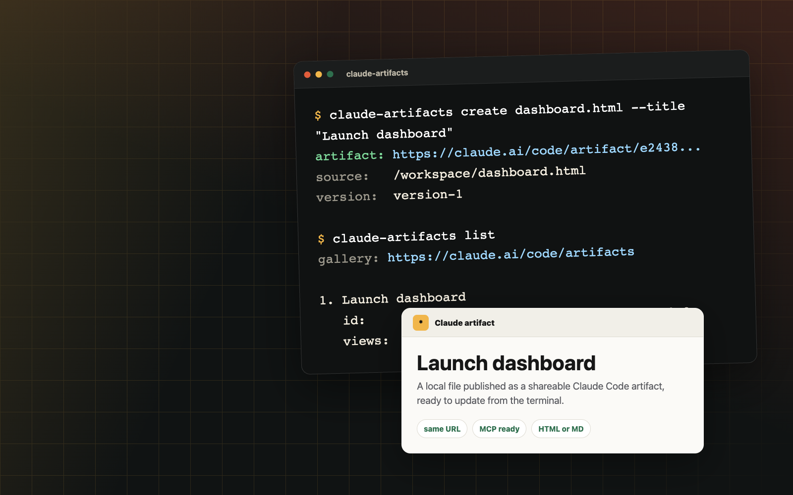

Publish a page
claude-artifacts create dashboard.html --title "Launch dashboard"

Claude Code artifacts, from your shell
Publish local HTML or Markdown, keep the same Claude URL as you iterate, and wire the same workflow into MCP-capable coding agents.
npm install -g claude-artifacts
Fast path
claude-artifacts create dashboard.html --title "Launch dashboard"
claude-artifacts update <id> dashboard.html --title "Launch dashboard"
claude-artifacts read <id> --content > deployed.html
Why it exists
Uses your existing Claude Code login.
Accepts full artifact URLs or UUIDs.
Lists URLs, owners, views, and gallery link.
Ships an MCP server for other coding agents.
MCP
Run the MCP stdio server with `npx`, then expose prefixed tools to Claude Code, Codex, Cursor, or any MCP-capable coding agent.
npx -y --package claude-artifacts claude-artifacts-mcp